Ускоряем Apache.JMeter
Вячеслав Смирнов
Специалист по тестированию
Бываю на конференциях
Apache.JMeter
https://jmeter.apache.org , 2003 - настоящее время, активенHTTP(S), JMS, JDBC, Java/Groovy, FTP, SMTP, ... 50+
ClickHouse, InfluxDB, Graphite, Grafana, HTML
Распределённый запуск, CI
Maven, IntelliJ IDEA
Сообщество
Рассмотрим
HTTP Request. Максимальная интенсивность
HTTP Request. Скачивание и отправка
PostProcessor
PreProcessor
Секретное оружие
Цели Разрабатывать такие тесты, чтобы система тормозила, а не Apache.JMeter. Экономить на ресурсах нагрузочных агентов. Разрабатывать тесты быстро и просто.
HTTP RequestМаксимальная интенсивность
Samplers.HTTP.Request.X. Простой тест
Несколько GET-запросов на локальный HTTP-сервер
Запуск и основка NGinx в тесте
Параметры запуска настраиваются
NGinx c конфигурацией по умолчанию x 2
добавим потоков, чтобы не упираться в CPU
worker_processes 2 ; # default 1worker_connections 512;
sendfile off;
tcp_nodelay on;
tcp_nopush off;
keepalive_timeout 75s;
keepalive_requests 100;
keepalive_disable msie6;
gzip off;
Настраиваются параметры HTTP-запроса
хост, порт, путь
Количество последовательных запросов
с помощью Loop Controller (RequestCount)
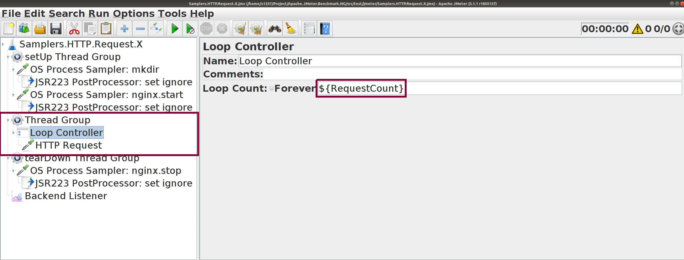
Количество потоков и итераций
также настраивается
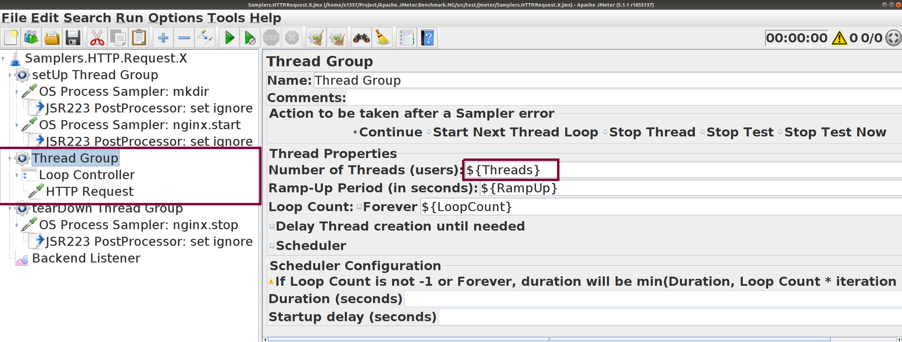
HTTP Request. Серия экспериментов
HTTP Request Keep-Alive:
☑️ включить (по умолчанию)
🔲 отключить
Количество последовательных запросов в сценарии:
🔼 1, 10, 50, 100
Очевидно, чтоKeep-Alive полезен, не нужно отключать его.
Не делать benchmark на Apache.JMeter
Сценарий на 10 запросов самый частый
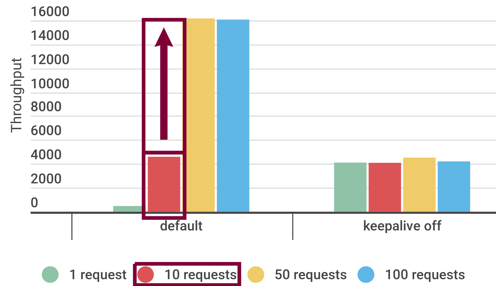
Ускорим тест c 10 запросами в сценарииc 4k req/s до 16k req/s и больше.
Понадобится
📈 telegraf, influxdb, grafana
🛠️ netstat, bash
⚙️ /proc/sys/net/*
📚 документация на ядро Linux
🛠️ SJK, Java Fligth Recorder
📃 настройки Apache.JMeter
Есть ошибки 5.24%
Non HTTP response code: java.net.NoRouteToHostException/Non HTTP response message: Невозможно назначить запрошенный адрес (Address not available)
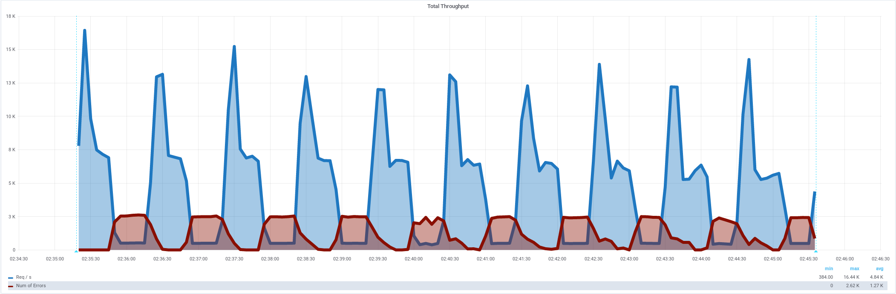
Скрипт JMeter: увеличить количество запросов (RequestCount) до 50
Интенсивность 16500/s (x 3,3 ) и без ошибок
Нужно удлиннять сценарий — запрещённый вариант
Скрипт JMeter: добавить HTTP Cache Manager
Может ускорит?
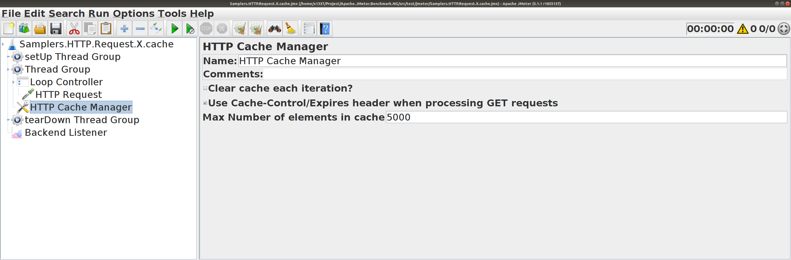
Скрипт JMeter: добавить HTTP Cache Manager
Интенсивность 4800/s и 4.9% ошибок (не повлиял)
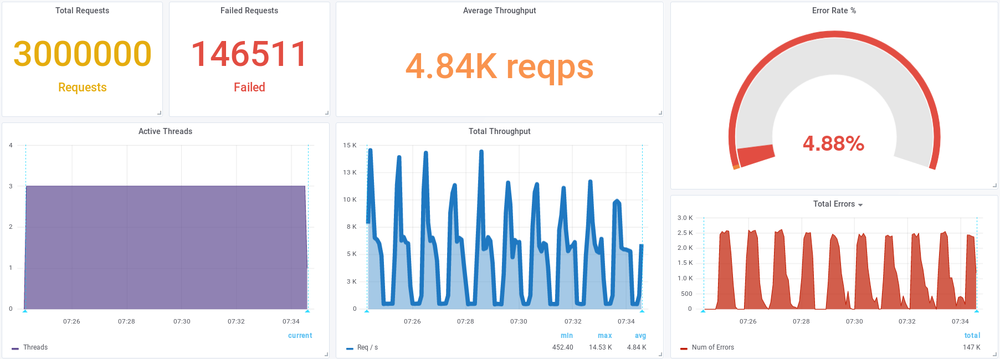
Модификацией интенсивность не поднять.Решили оставить 10 запросов в итерации. А HTTP Cache Manager не ускоряет.
Настройки JMeter: jmeter.httpsampler=Java
Интенсивность 16300/s (x 3,3 ) и без ошибок
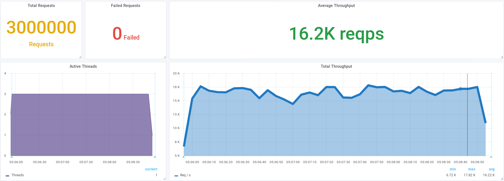
SJK: socketRead (34,34% )
Apache.JMeter читает заголовок ответа
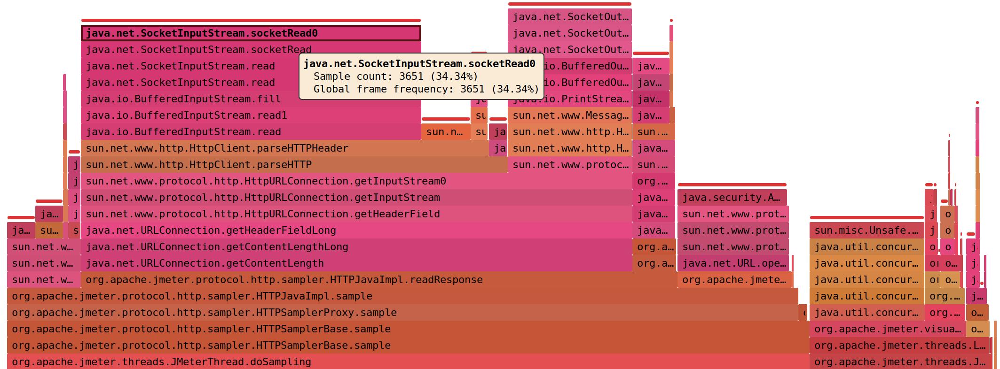
© SJK flame diagram
Настройки JMeter: не сбрасывать состояние
httpclient.reset_state_on_thread_group_iteration (false )
#---------------------------------------------------------------------------
# SSL configuration
#---------------------------------------------------------------------------
httpclient.reset_state_on_thread_group_iteration=false
Настройки JMeter: не сбрасывать состояние
Интенсивность 19240/s (x 3,9 ) и без ошибок
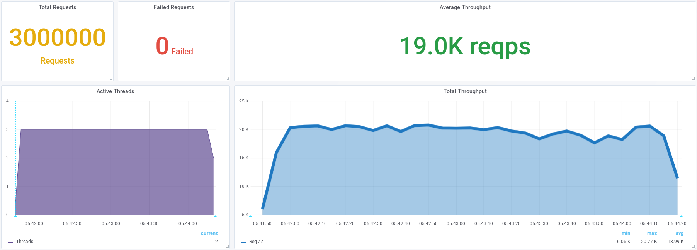
Настройки JMeter
Если интенсивность скачет (500/s - 16000/s), есть ошибки (Address not available) и JMeter занят socketConnect (> 50%)
Можно перейти с HTTPClient4 на Java-клиент (x 3,3 )
jmeter.httpsampler=Java
Или кешировать соединение между итерациями (x 3,9 )
httpclient.reset_state_on_thread_group_iteration=false
Подключения к NGinx идут волнами
от 0/s до 1200/s (x 0.1 от интенсивности)
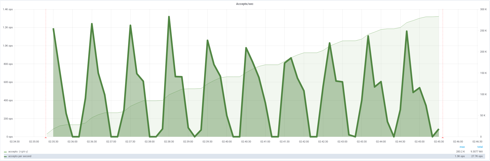
CPU: преимущественно системное время
%System в 3,5 раза выше, чем %User
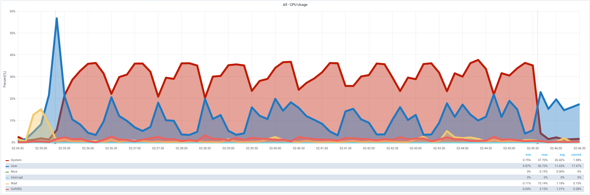
netstat: tcp_time_wait (28 231)
Открывается слишком много соединений, лимит портов
Закрытые соединения с nginx (localhost:5555)
Одно ESTABLISHED и 27500 TIME_WAIT
netstat | grep -oP \
"^\w+\s+\d+\s+\d+\s+(\w+:\w+)\s+(localhost:5555)\s.*"
tcp 0 0 localhost:***** localhost:5555 ESTABLISHED
tcp6 0 0 localhost:***** localhost:5555 TIME_WAIT
tcp6 0 0 localhost:***** localhost:5555 TIME_WAIT
...
Linux: net.ipv4.ip_local_port_range (32768 60999)
Больше диапазон — больше соединений
Изначально диапазон на 28231 портов:
cat /proc/sys/net/ipv4/ip_local_port_range
32768 60999
Теперь без ошибок
ошибки ушли
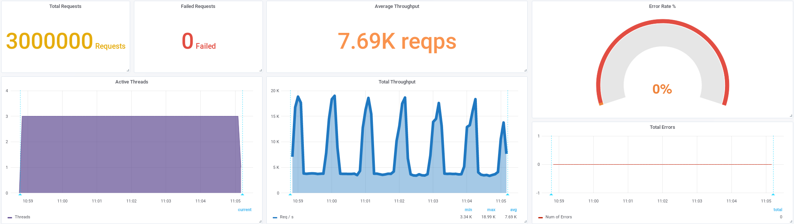
Ускорение в 1,6 раза — c 4800/s до 7700/snet.ipv4.ip_local_port_range (1024 60999)
netstat: tcp_time_wait (32 768 , не 59 975 )
новый лимит — симптомы полечены, проблема осталась
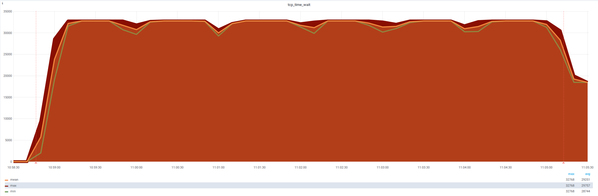
Linux: net.ipv4.tcp_max_tw_buckets (32768)
Расширим размер очереди TIME_WAIT (временно)
Со значения 32768 :
cat /proc/sys/net/ipv4/tcp_max_tw_buckets
32768
Linux: net.ipv4.tcp_max_tw_buckets (65536)
Расширим размер очереди TIME_WAIT (временно)
Со значения 32768 до значения 65536 (x 2):
echo 65536 > /proc/sys/net/ipv4/tcp_max_tw_buckets
netstat: tcp_time_wait (40 000 - 46 000 )
лимита в 32768 больше нет — но не помогло
Увеличение размера очереди TIME_WAITnet.ipv4.tcp_max_tw_buckets (65536)
Linux: net.ipv4.tcp_tw_reuse (1)
Разрешим переиспользовать TIME_WAIT
По умолчанию для исходящих подключений нельзя использовать TIME_WAIT-соединения.
Разрешим:
echo 1 > /proc/sys/net/ipv4/tcp_tw_reuse
Средняя интенсивность 17300/s (x 3,6 )
более стабильная: 16500/s ... 19000/s
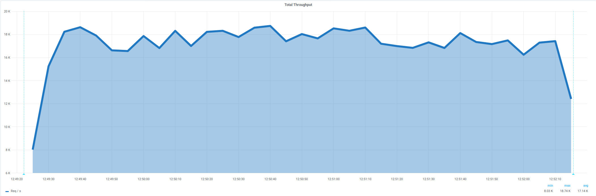
© Apache.JMeter report
SJK: socketRead (38,31% )
Apache.JMeter читает заголовок ответа
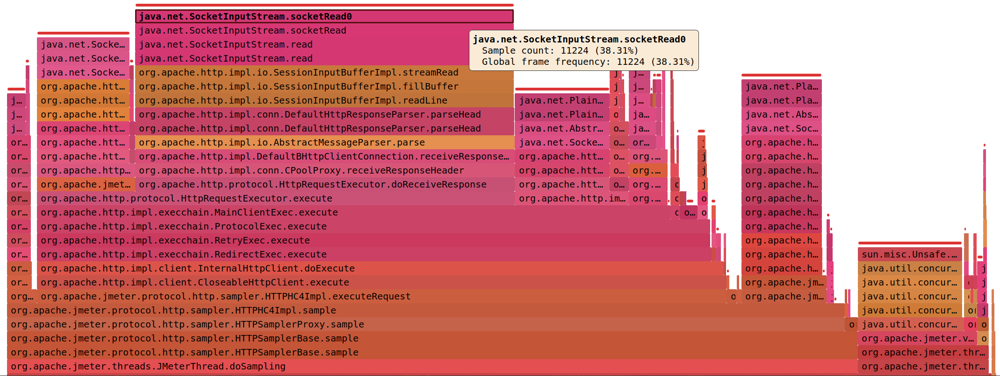
© SJK flame diagram
CPU: больше не упирается в систему
%User в 2 раза выше, чем %System
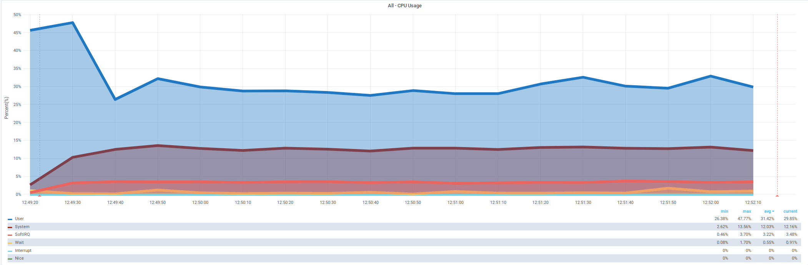
netstat: tcp_time_wait (30 000 , снижение )
подозрительно ровная полка
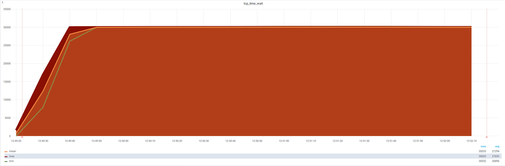
Gatling documentation / 3.1 / General / Operations
Java Version
IPv4 vs IPv6
OS Tuning
Open Files Limit
Kernel and Network Tuning
-Djava.net.preferIPv4Stack=true
-Djava.net.preferIPv6Addresses=false
ulimit -n 65536
sudo sysctl -w net.ipv4.ip_local_port_range="1025 65535" echo 300000 | sudo tee /proc/sys/fs/nr_open echo 300000 | sudo tee /proc/sys/fs/file-max net.ipv4.tcp_max_syn_backlog = 40000
net.core.somaxconn = 40000
net.core.wmem_default = 8388608
net.core.rmem_default = 8388608
net.ipv4.tcp_sack = 1
net.ipv4.tcp_window_scaling = 1
net.ipv4.tcp_fin_timeout = 15
net.ipv4.tcp_keepalive_intvl = 30
net.ipv4.tcp_tw_reuse = 1 net.ipv4.tcp_moderate_rcvbuf = 1
net.core.rmem_max = 134217728
net.core.wmem_max = 134217728
net.ipv4.tcp_mem = 134217728 134217728 134217728
net.ipv4.tcp_rmem = 4096 277750 134217728
net.ipv4.tcp_wmem = 4096 277750 134217728
net.core.netdev_max_backlog = 300000
ulimit -n 30000
net.ipv4.tcp_max_tw_buckets = 65536 net.ipv4.tcp_tw_recycle = 1 net.ipv4.tcp_tw_reuse = 0 net.ipv4.tcp_max_syn_backlog = 131072
net.ipv4.tcp_syn_retries = 3
net.ipv4.tcp_synack_retries = 3
net.ipv4.tcp_retries1 = 3
net.ipv4.tcp_retries2 = 8
net.ipv4.tcp_rmem = 16384 174760 349520
net.ipv4.tcp_wmem = 16384 131072 262144
net.ipv4.tcp_mem = 262144 524288 1048576
net.ipv4.tcp_max_orphans = 65536
net.ipv4.tcp_fin_timeout = 10
net.ipv4.tcp_low_latency = 1
net.ipv4.tcp_syncookies = 0
net.netfilter.nf_conntrack_max = 1048576
Ускорение в 3,6 раза — c 4800/s до 17300/snet.ipv4.tcp_tw_reuse (1)
Ускорители Apache.JMeter
Опция
Значение
Ускорение
httpclient.reset_state_on_thread_group_iteration
false
x3.9
jmeter.httpsampler
Java
x3.3
Linux: net.ipv4.tcp_tw_reuse
1
x3.6
Linux: net.ipv4.tcp_max_tw_buckets
65536
Linux: net.ipv4.ip_local_port_range
1024 60999
x1.6
NGinx: worker_processes
2 (+1)
bit.ly/gatling-tuning , bit.ly/tank-tuning
HTTP RequestСкачивание файлов
Скачаем 1 ГБайт имея 4 ГБайт ОЗУ
Создадим файл на 1 ГБайт и скачаем его 200 раз
dd if=/dev/urandom of=/tmp/data/1g.img \
bs=1 count=0 seek=1G
200 ГБайт скачались достаточно быстро
Параметр
Значение
Среднее время
1460 ms
Длительность
5 минут
Необходимая память
4096 МБайт
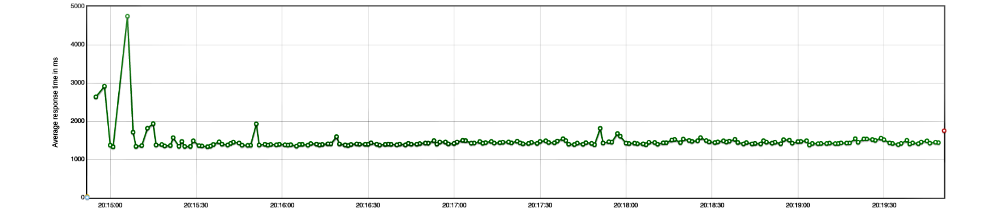
© Apache JMeter Dashboard
Больше 1 ГБайт не скачать для Heap 4 ГБайт
Ошибка OutOfMemoryError уже для файла в 1100 МБайт
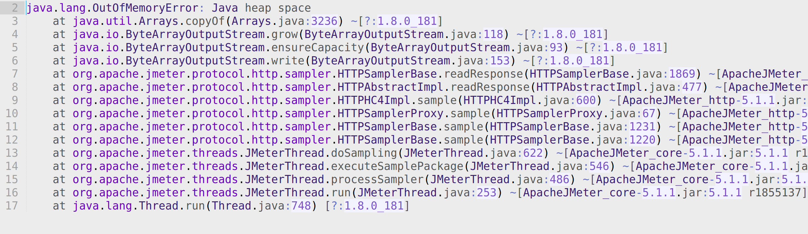
HTTP Request с настройками по умолчанию,
☑️ Save response as MD5 Hash
экономит память при скачивании больших файлов
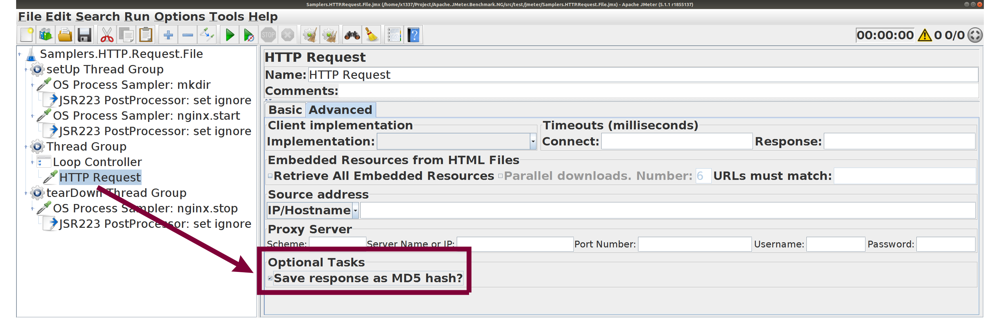
200 ГБайт с MD5 скачивались дольше
Параметр
Значение
Среднее время
5475 ms
Длительность
18 минут 17 сек
Необходимая память
0 МБайт (минимум)
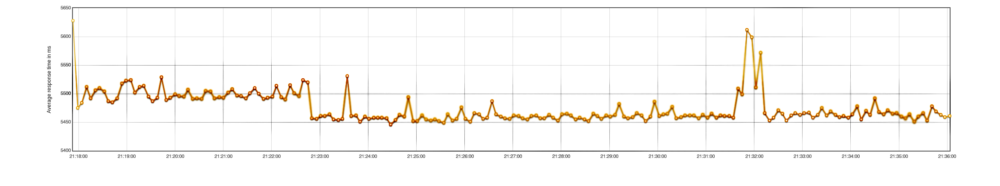
© Apache JMeter Dashboard
SJK: MessageDigest (66.90% )
JMeter считает MD5 в два раза дольше, чем читает
© SJK flame diagram
☑️ Save response as MD5 Hash 0 ,,
Как скачивать быстроМожет быть curl /wget и bash помогут?
wget есть в Linux
wget-download.sh url
wget -S \
--progress=dot:mega \
--output-document=/dev/null \
$1
wget есть и в Microsoft Windows (MinGW)
wget-download.bat url
wget -S ^
--progress=dot:mega ^
--output-document=- ^
%1 ^
1>NUL
Можно ограничить максимальную скорость
wget-download.bat url
wget -S ^
--limit-rate=20m ^
--progress=dot:mega ^
--output-document=- ^
%1 ^
1>NUL
Что превосходит аналог (cps)
по удобству использования
# Define characters per second > 0 to emulate slow connections
httpclient.socket.http.cps=0
httpclient.socket.https.cps=0
Прикинуться браузером с поддержкой gzip
wget-download.gzip.bat url
wget -S --progress=dot:mega ^
--header "User-Agent: Mozilla/5.0 (Windows NT 6.1; WOW64; rv:44.0) Gecko/20100101 Firefox/44.0" ^
--header "Accept: text/html,application/xhtml+xml,application/xml;q=0.9,*/*;q=0.8" ^
--header "Accept-Encoding: gzip, deflate " ^
--output-document=- %1 1>NUL
Передать первые 1000 байт в PostProcessor
wget-download.gzip.head.bat url
wget -S --progress=dot:mega ^
--header "User-Agent: Mozilla/5.0 (Windows NT 6.1; WOW64; rv:44.0) Gecko/20100101 Firefox/44.0" ^
--header "Accept: text/html,application/xhtml+xml,application/xml;q=0.9,*/*;q=0.8" ^
--header "Accept-Encoding: gzip, deflate" ^
--output-document=- %1 | ^
head -c 1000 | gzip -d -c -
JSR-223 PostProcessor встраивает wget
Программное заполнение параметров SampleResult
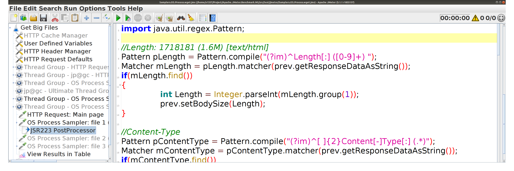
JSR-223 PostProcessor встраивает wget
Сохраняется Response Body
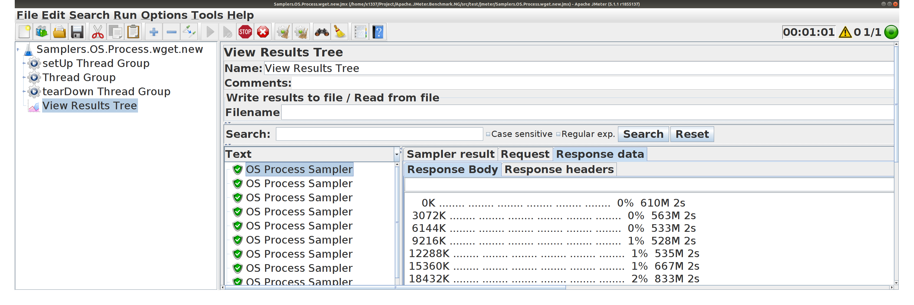
JSR-223 PostProcessor встраивает wget
Сохраняется Response Headers
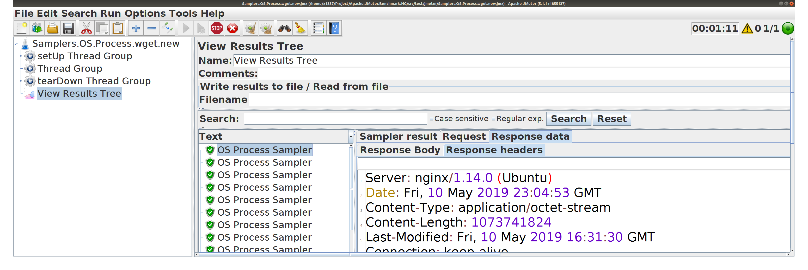
200 ГБайт с wget скачивались очень быстро
Параметр
Значение
Среднее время
727 ms
Длительность
2 минуты 27 сек
Необходимая память
0 МБайт (минимум)
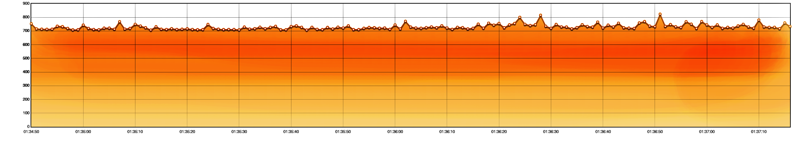
© Apache JMeter Dashboard
Скачать 200 ГБайт
Способ
Длительность
HTTP Request
5 минут
☑️ Save response as MD5 Hash
18 минут 17 сек
OS Process Sampler и wget
2 минуты 27 сек
OS Process Sampler + JSR-223 PostProcessor wget даёт ускорение в 2 раза,7 раз по сравнению с MD5.
Попробуем ограничить читаемый размер до 100 байт
httpsampler.max_bytes_to_store_per_request=100
# Max size of bytes stored in memory per SampleResult
# Ensure you don't exceed max capacity of a Java Array and remember
# that the higher it is, the higher JMeter will consume heap
# Defaults to 0, which means no truncation
#httpsampler.max_bytes_to_store_per_request=0
Быстрее с max_bytes_to_store_per_request=100
Параметр
Значение
Среднее время
475 ms
Длительность
1 минута 36 сек
Необходимая память
180 МБайт (немного)
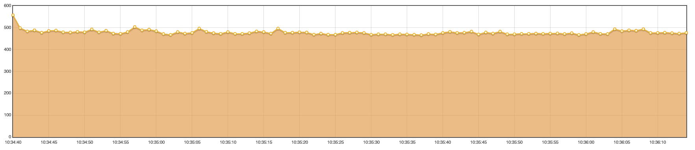
© Apache JMeter Dashboard
SJK: socketRead (99.35% )
JMeter читает, ни на что не отвлекается
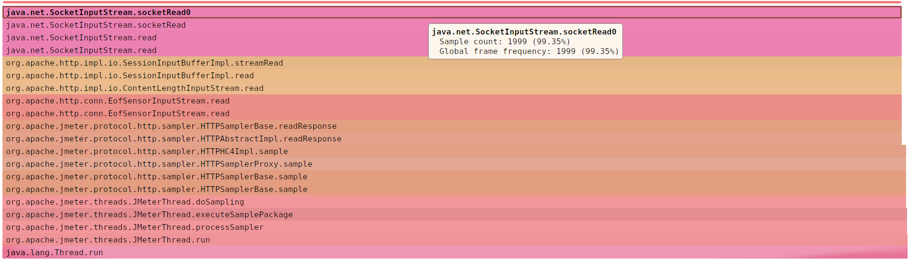
© SJK flame diagram
Скачать 200 ГБайт
Способ
Длительность
HTTP Request
5 минут
☑️ Save response as MD5 Hash
18 минут 17 сек
OS Process Sampler и wget
2 минуты 27 сек
max_bytes_to_store_per_request=100
1 минута 36 сек
HTTP RequestОтправка файлов
HTTP Request. Отправка файлов Пользуйтесь вкладкой Files Upload .
Комбинации вариантов передачи параметров
Вариант передачи
Один
С
С
С
С
Parameters
Body Data
Files Upload (All)
Files Upload (File Path)
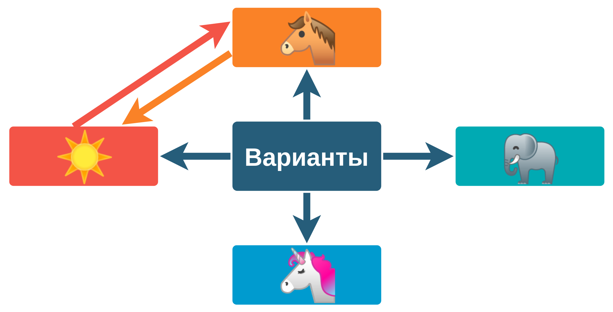
Комбинации вариантов передачи параметров
Parameters и Files Upload (parameters) дружат
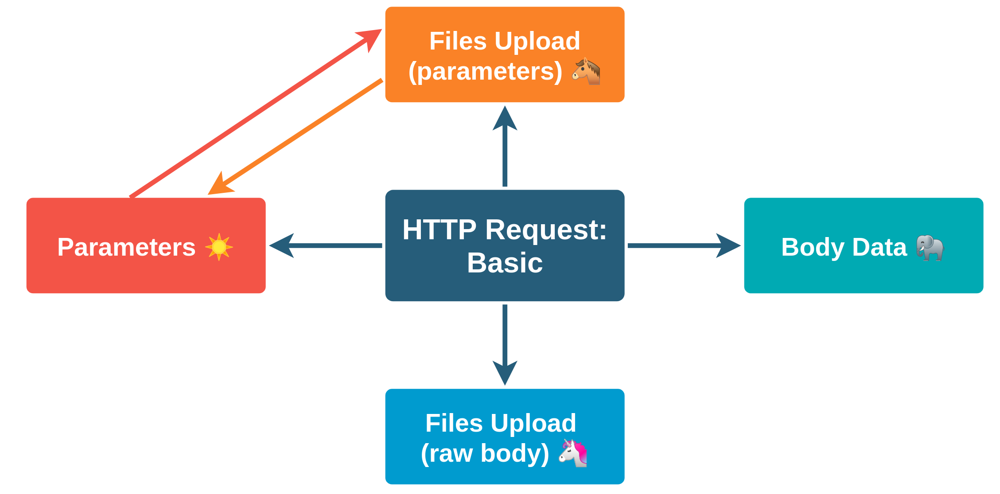
Комбинации вариантов передачи параметров
Files Upload (body data) и Body Data сами по себе
HTTP POST один параметр
multipart/form-data
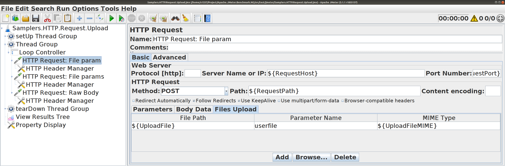
HTTP POST один параметр
multipart/form-data
HTTP POST несколько параметров
multipart/form-data
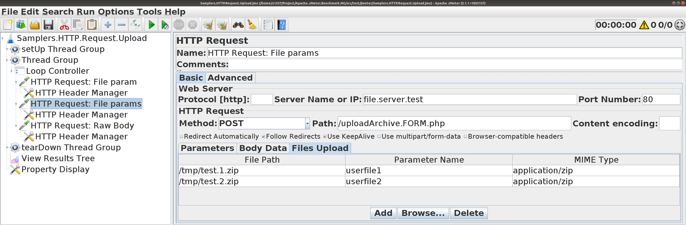
HTTP POST (raw body)
Загрузка тела запроса из файла
HTTP POST (raw body)
Нужно заполнить только File Path
Всё просто прекрасно,Body Data ?
HTTP Request. Отправка файлов
OS Process Sampler: tar, sed, ...
Подготовить архив, распаковать, заменить в нём строки
HTTP Request. Отправка файлов ginzip , sed , ...Пользуйтесь вкладкой Files Upload ,
PostProcessor-ы
Тестовая страница: apache.jmeter.org
Найдём заголовок страницы
За основу взят пустой JSR-223 Sampler
К нему добавлены PostProcessor-ы для переменной
Boundary самый быстрый
RegExp почти такой же быстрый
Общее влияние PostPorcessor-ов небольшое
Так CSS Selector выполняется дольше CSV Logger лишь в 2 раза
PostProcessor для HTML XPath для HTML.RegExp и Boundary Extractor .CSS Selector неплох - лишь x2 от логгера.
PreProcessor-ы
Как быстро подготовить XML?
groovy.xml.MarkupBuilder x5 от SimpleTemplateEngine
PreProcessor-ы groovy.xml.MarkupBuilder быстрееSimpleTemplateEngine , быстрее сериализации.
Секретное оружие Как быстро скачивать расширения и библиотеки? Как запустить профилирование теста? Как не терять изменения в скрипте?
Maven, jmeter-maven-plugin и IntelliJ IDEA
Ускорение работы в 10 раз, не меньше
IntelliJ IDEA
Подстветка синтаксиса, горячие клавиши, git
jmeter-maven-plugin
Плагины хранятся в git (не бинарники)
jmeter-maven-plugin
Библиотеки хранятся в git (не бинарники)
jmeter-maven-plugin
Зависимости скачиваются сами
Любые параметры модифицируются
Создадим файл на 1 ГБайт и скачаем его 200 раз
dd if=/dev/urandom of=/tmp/data/1g.img \
bs=1 count=0 seek=1G
mvn jmeter:jmeter \
-P Samplers.HTTP.Request.File \
-DThreads=1 -DLoopCount=200 -DRequestCount=1 \
-DRequestPath=/tmp/data/1g.img
Профили комбинируются между собой
Выполним тестирование с большим размером Heap
dd if=/dev/urandom of=/tmp/data/1g.img \
bs=1 count=0 seek=1G
mvn jmeter:jmeter \
-P Samplers.HTTP.Request.File,_.jvm.heap.big \
-DThreads=1 -DLoopCount=200 -DRequestCount=1 \
-DRequestPath=/tmp/data/1g.img
Профилирование SJK в одну строку
И через 10 минут готов отчёт
# Запуск sjk-профайлера
mvn exec:exec@sjk
# Запуск профилируемого теста
mvn jmeter:jmeter \
-P Samplers.HTTP.Request.File, \
-DThreads=1 -DLoopCount=200 -DRequestCount=1 \
-DRequestPath=/tmp/data/1g.img
Профилирование Java Fligth Recorder в одну строку
И через 10 минут готов отчёт
# Запуск профилируемого теста
mvn jmeter:jmeter \
-P Samplers.HTTP.Request.File,_.jvm.profiler.JFR \
-DThreads=1 -DLoopCount=200 -DRequestCount=1 \
-DRequestPath=/tmp/data/1g.img
Профилирование JVisual VM в одну строку
И через 10 минут готов отчёт
# Запуск профилируемого теста
mvn jmeter:jmeter \
-P Samplers.HTTP.Request.File,_.jvm.profiler.jvisualvm \
-DThreads=1 -DLoopCount=200 -DRequestCount=1 \
-DRequestPath=/tmp/data/1g.img